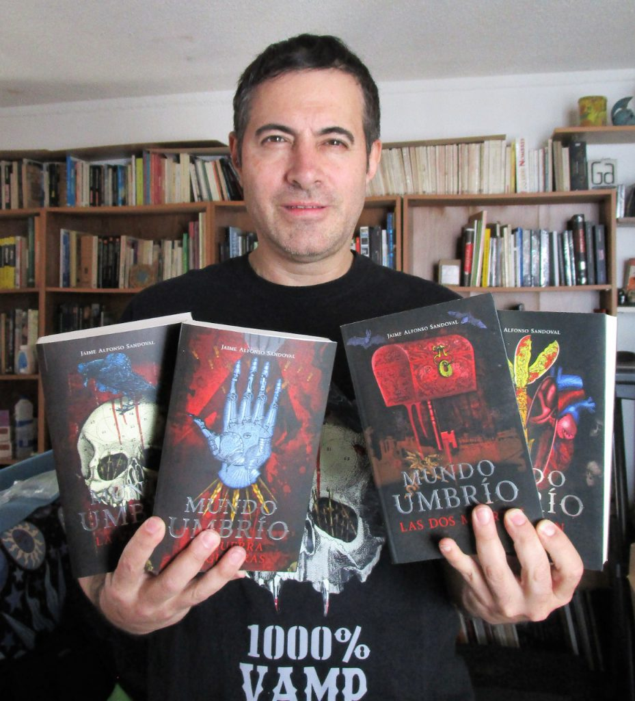

ATENEA CRUZ
Narradora y poeta mexicana. Licenciatura en Letras en la Universidad Autónoma de Zacatecas uaz. Es autora de una colección de cuentos así como de dos poemarios. Premio Nacional de Cuento Fantástico y de Ciencia Ficción 2017. Premio Regional de Poesía Beatriz Quiñones 2012. Becaria del Fondo Nacional para la Cultura y la Artes fonca Jóvenes Creadores en la disciplina de cuento 2018-2019. Ha colaborado como columnista, narradora y reseñista en Letras Libres, Playboy, Tierra Adentro, Punto de Partida, Rio Grande Review y Crítica entre otras revistas. Renunció a la burocracia cultural para regresar a una de sus grandes pasiones: enseñar literatura.
JAIME ALFONSO SANDOVAL

Es un escritor y guionista mexicano que se ha especializado en literatura infantil y juvenil. Ha ganado diversos premios y reconocimientos por su obra, tanto en México como en el extranjero. Nació en 1972 en San Luis Potosí, México. Comenzó la carrera de Letras Hispánicas en la facultad de filosofía y letras de la UNAM, misma que cambió para estudiar tiempo completo la carrera de realización cinematográfica en el Centro Universitario de Estudios Cinematográficos (CUEC) de la UNAM. Estudió el diplomado en creación literaria en la Escuela de Escritores de la Sociedad General de Escritores de México (SOGEM), siendo parte de la novena generación; fue parte del taller de dramaturgia de Hugo Argüelles. Dos de sus libros más conocidos son El club de la salamandra y La ciudad de las esfinges.
MARTHA RIVA PALACIO
Martha Riva Palacio Obón es una escritora, poeta y artista sonora mexicana. Ha recibido varios premios y reconocimientos por su obra, entre los que cabe mencionar el Premio Hispanoamericano de poesía para niños (2014), el XVIII Premio de Literatura Juvenil Gran Angular (2013)y el XVI Premio de Literatura Infantil Barco de Vapor (2011). Sus libros han sido incluidos en catálogos como el White Ravens de la Biblioteca de la Juventud en Alemania (2013), la Exposición de los mejores libros para Niños y Jóvenes del Banco del Libro de Venezuela (2015 y 2016) y la Guía de libros recomendados para niños y jóvenes de IBBY (International Board on Books for Young People) / México (2013 y 2016).
NEIL GAIMAN
Neil Gaiman ha alcanzado la fama como autor de libros, novelas gráficas, relatos cortos y películas para públicos de todas las edades. Entre sus títulos más notables se hallan The Sandman, el innovador cómic que alcanzó el primer puesto en la lista de los libros más vendidos de The New York Times, y que fue merecedor de nueve Premios Eisner y del World Fantasy Award en la categoría de Mejor historia corta; El libro del cementerio, primera obra en ganar a un tiempo la medalla Newberry y la medalla Carnegie; American Gods, que en breve será adaptada a la pequeña pantalla en Estados Unidos; y El océano al final del camino, que en 2013 ganó el National Book Award al Libro del Año en Gran Bretaña.